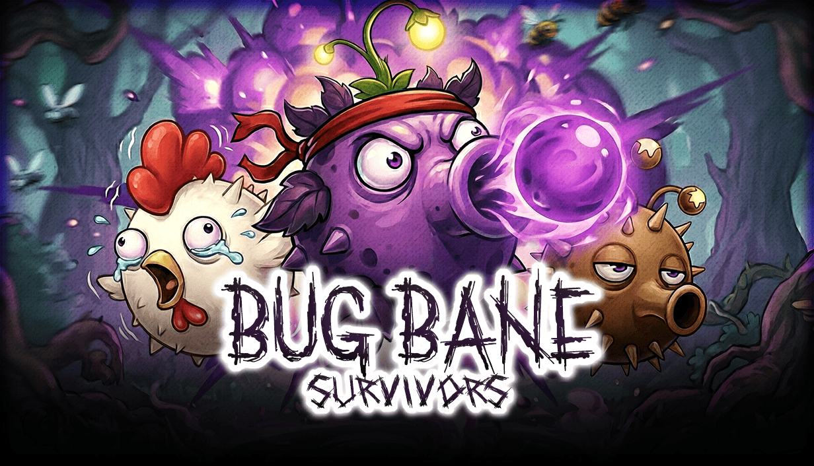

Steam Early AccessSolo Developer
Bug Bane Survivors
A humorous action roguelike with lively combat animation and a focus on punchy game feel. Solo developed from gameplay to release.
UnityC#Action RoguelikeRead case study →
Unity game developer · programming-focused
I build games end-to-end, with C# and gameplay programming at the core. Solo developer of Bug Bane, The Pandemic Papers, and Counter Smash; co-developer of Foes of Legacy.
Released games, a mobile game-feel prototype, and a university project in progress. Open a case study to see my role, implementation focus, and the work itself.

A humorous action roguelike with lively combat animation and a focus on punchy game feel. Solo developed from gameplay to release.

A two-person team project featuring my work on player abilities, enemy AI, UI, optimization and selected game assets.

A mobile physics prototype focused on game feel: a looping charge meter, risky explosive-shot timing, and tactile brick destruction.

A 2D simulation built around document handling and verification, complex UI state management, and custom physics. Awarded second place at the university graduation project presentation.
I am a Unity game developer focused on C#, gameplay programming and building systems that turn ideas into complete, playable games.
My experience comes from owning independent projects end-to-end. Programming is my core craft, but I also step into game design, UI, Blender, Photoshop and SFX whenever the game needs it.
View Game Dev CVget in touch
Looking for a Unity developer who can own the code and stay involved across production? I am open to game development roles and collaborations.
erensirli02@gmail.com